Practica 5: Series de Fourier en tiempo continuo
Integrantes:
- Bernal Casas Hector Obed
- Cueto Chávez Leonardo Daniel
- Gutiérrez Alvirde José MartÃn
Contents
Objetivos.
- Realizar gráficas de series de Fourier exponenciales y trigonométricas en tiempo continuo
- Manipulación de instrucciones en MATLAB
Problema 1. Realizar el ejemplo 6.2 de Lathi
Agregar la expresión análitica de la serie en ambos formatos. Utilizar A =1.
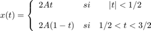
d0=0; dn=@(n) -(4/((n^2)*(pi^2)))*sin((n*pi)/2)*j; t0=-1/2; tf=3/2; f=@(t) 2*t.*(abs(t)<0.5)+2*(1-t).*((t<1.5)&(0.5<t)); armo=15; a=-5; b=5; sfc1(t0,tf,dn,d0,f,armo,a,b)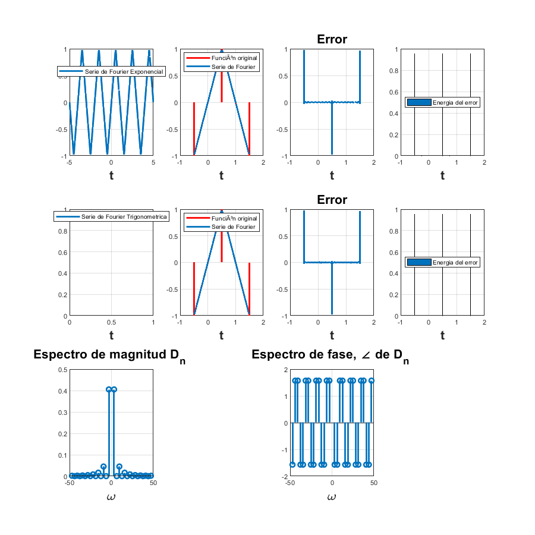
Problema 2. Realizar el ejemplo 6.4 de Lathi
Agregar la expresión análitica de la serie en ambos formatos.
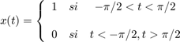
d0=1/2; dn=@(n) (1/(n*pi))*sin((n*pi)/2); t0=-pi; tf=pi; f=@(t) 1.0.*((t>=-pi/2)&(t<=pi/2)); armo=15; a=-5*pi; b=5*pi; sfc1(t0,tf,dn,d0,f,armo,a,b)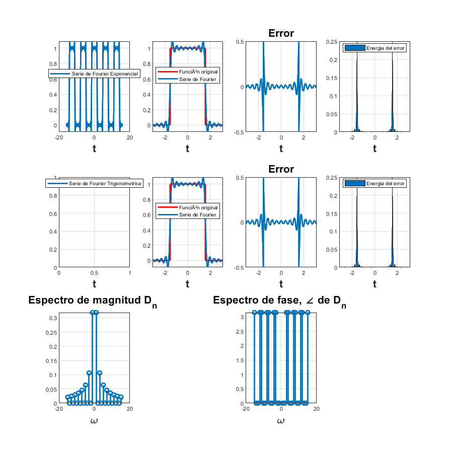
Problema 3. Realizar las series de Fourier del PR08
Agregar la expresión análitica de la serie en ambos formatos (hay dos series en esta tarea).
1. 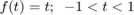$
d0=0; dn=@(n) cos(n*pi)/(n*pi)*j; t0=-1; tf=1; f=@(t) t; armo=15; a=-5; b=5; sfc1(t0,tf,dn,d0,f,armo,a,b)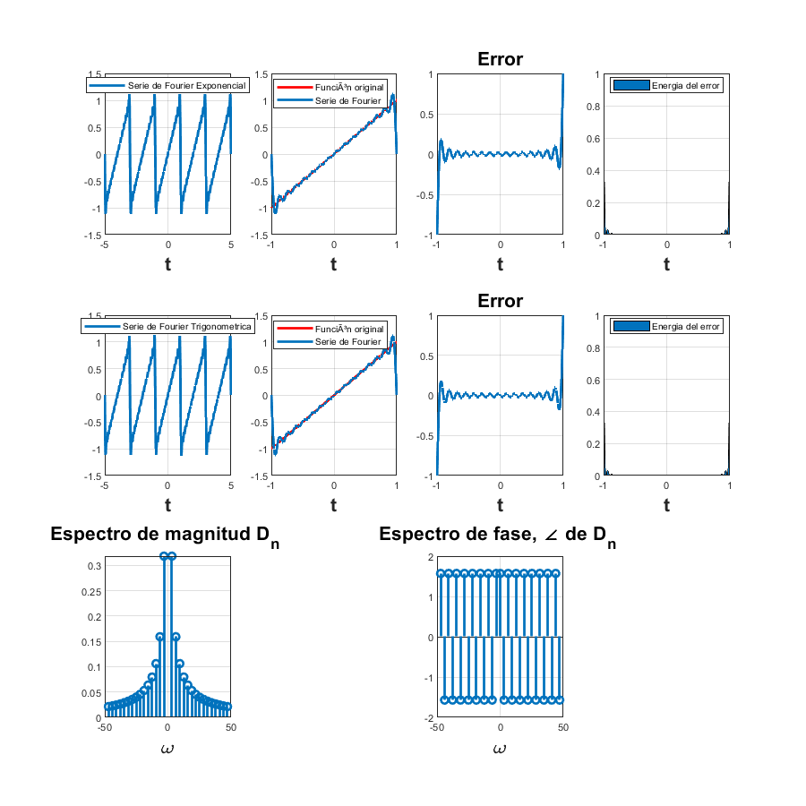
2. 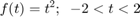$
d0=4/3; dn=@(n) 8/(n*pi)^2*cos(n*pi); t0=-2; tf=2; f=@(t) t.^2; armo=15; a=-10; b=10; sfc1(t0,tf,dn,d0,f,armo,a,b)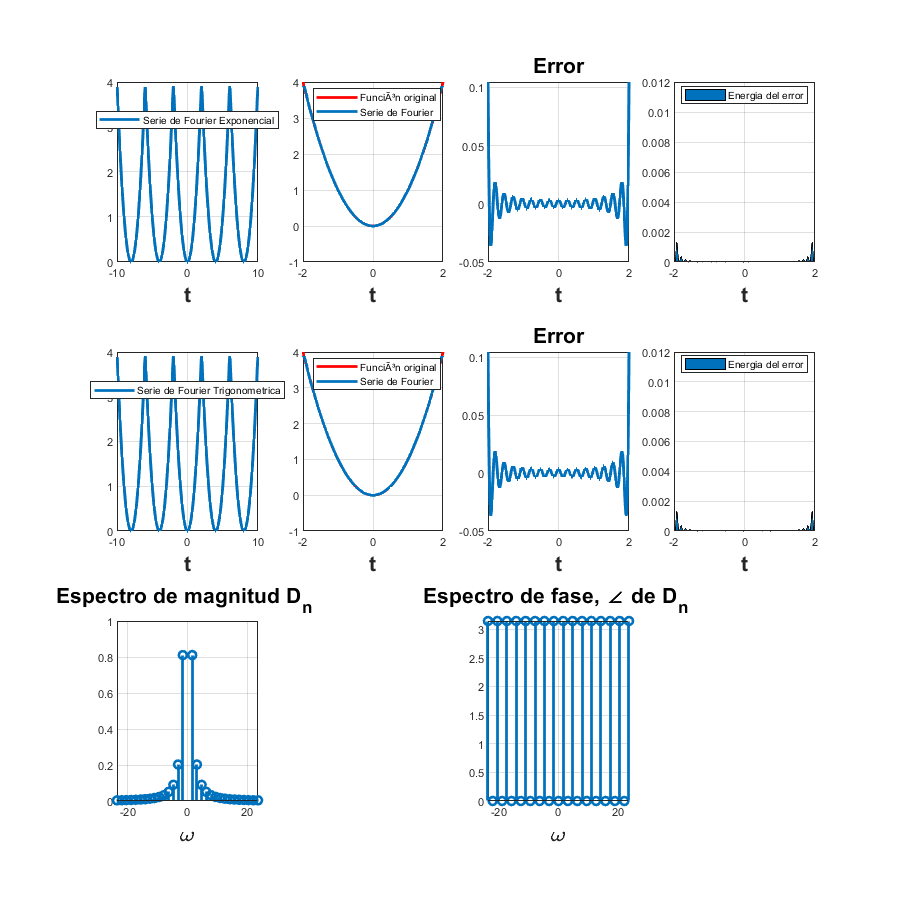
Problema 4. Realizar las series de Fourier del PR10
Agregar la expresión análitica de la serie en ambos formatos (ejercicio 1 y 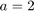).
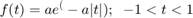
d0=(exp(-2)-1)/(-2); dn=@(n) (exp(-2-(j*pi*n))-1)/(-2-(j*pi*n)); t0=-1; tf=1; f=@(t) 2.*exp(-2.*abs(t)); armo=15; a=-5; b=5; sfc1(t0,tf,dn,d0,f,armo,a,b)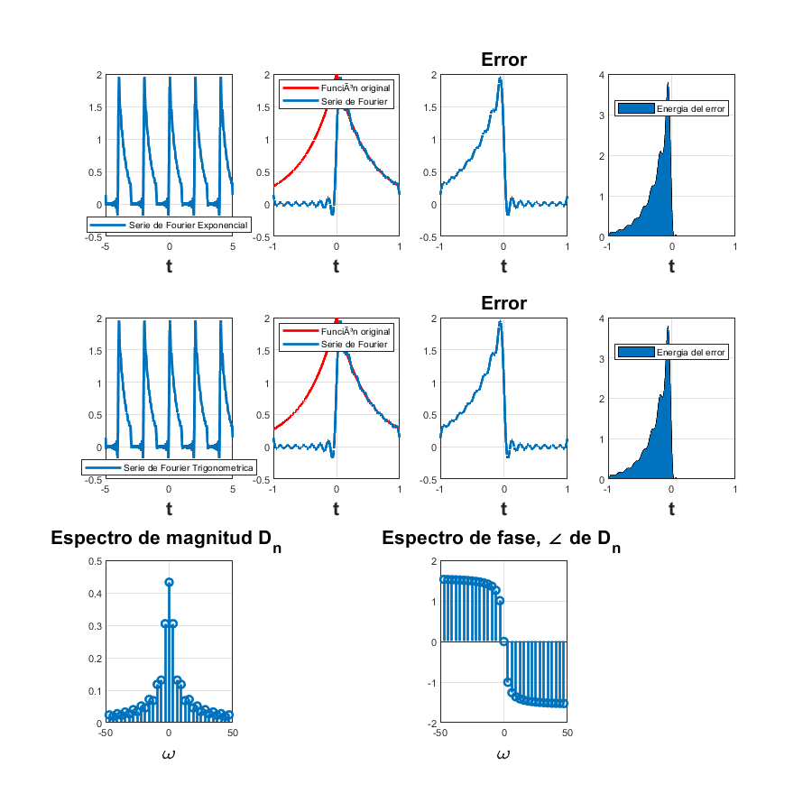
El código que usamos (sfc1) para resolver los problemas 1 y 2 es el siguiente:
function sfc1(t0,tf,dn,d0,f,armo,a,b) % t0 el valor inicial para calcular la serie % tf el valor final donde calcular la serie % dn función de la fórmula de los dn % f función original % armo número de armonicos a utilizar en la gráfica % a, b intevalo para realizar la grafica de la serie w0=2*pi/(tf-t0); sf=d0; t=a:0.0001:b; for n=1:armo sf=sf+dn(-n)*exp(w0*-n*t*j)+dn(n)*exp(w0*n*t*j); end figure (1) hFig = figure(1); set(hFig, 'Position', [0 0 900 900]) subplot(3,4,1) plot(t,sf,'LineWidth',2) grid on legend('Serie de Fourier Exponencial','Location','Best') xlabel('t','FontWeight','bold','FontSize',16) sf=d0; t1=t0:0.0001:tf; for n=1:armo sf=sf+dn(-n)*exp(w0*-n*t1*j)+dn(n)*exp(w0*n*t1*j); end subplot(3,4,2) plot(t1,f(t1),'r','LineWidth',2) grid on hold on plot(t1,sf,'LineWidth',2) legend('Función original','Serie de Fourier ','Location','Best') xlabel('t','FontWeight','bold','FontSize',16) nn=-armo:armo; axis auto hold off subplot(3,4,3) e=f(t1)-sf; plot(t1,e,'LineWidth',2) title('Error','FontWeight','bold','FontSize',16) xlabel('t','FontWeight','bold','FontSize',16) axis auto grid on subplot(3,4,4) e=f(t1)-sf; area(t1,e.^2) legend('Energia del error','Location','Best') xlabel('t','FontWeight','bold','FontSize',16) axis auto grid on absdn=zeros(1,length(nn)); cont=1; for i =-armo:armo if i==0 absdn(cont)=d0; end absdn(cont)=dn(i); cont=cont+1; end subplot(3,4,9) stem(w0*nn,abs(absdn),'LineWidth',2) title('Espectro de magnitud D_n ','FontWeight','bold','FontSize',16) xlabel('\omega','FontWeight','bold','FontSize',16) grid on subplot(3,4,11) % % stem(w0*nn,angle(absdn),'LineWidth',2) % % title('Espectro de fase, \angle de D_n ','FontWeight','bold','FontSize',16) % % xlabel('\omega','FontWeight','bold','FontSize',16) grid on cn =@(n) 2*abs(dn(n)); c0 = abs(d0); an = @(n) angle(dn(n)); a0 = angle(dn(0)); sft = c0*cos(a0); for n=1:armo sft=sft+cn(n)*cos((n*w0*t)+an(n)); end subplot(3,4,5) plot(t,sft,'LineWidth',2) legend('Serie de Fourier Trigonometrica','Location','Best') xlabel('t','FontWeight','bold','FontSize',16) grid on sft=c0*cos(00); t1=t0:0.0001:tf; for n=1:armo sft=sft+cn(n)*cos((n*w0*t1)+an(n)); end subplot(3,4,6) plot(t1,f(t1),'r','LineWidth',2) grid on hold on plot(t1,sft,'LineWidth',2) legend('Función original','Serie de Fourier ','Location','Best') xlabel('t','FontWeight','bold','FontSize',16) nn=-armo:armo; axis auto hold off subplot(3,4,7) e=f(t1)-sft; plot(t1,e,'LineWidth',2) title('Error','FontWeight','bold','FontSize',16) xlabel('t','FontWeight','bold','FontSize',16) axis auto grid on subplot(3,4,8) e=f(t1)-sft; area(t1,e.^2) legend('Energia del error','Location','Best') xlabel('t','FontWeight','bold','FontSize',16) axis auto grid on end